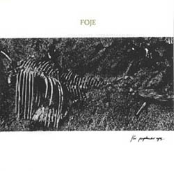

 |
kai perplauksi upę |
Kai perplauksi upę – 1995 m. išleistas grupės Foje albumas, įrašytas 1994 m. pabaigoje.
Palyginti su kitais Foje albumais, Kai perplauksi upę pasižymi „kietesniu“ gitarų skambesiu, „griežtesniu“ garsu. Anot to meto interviu, dėl tokio skambesio kovojo (ir visus mūšius laimėjo) Algimantas Kriščiūnas, tuo nuliūdindamas klavišininką Arnoldą Lukošių, kurio ilgai kurtos klavišinių partijos buvo nustumtos į antrą planą.
- Andrius Mamontovas – vokalai, gitaros, tamburinai, pianinai
- Arnas Lukošius – klavišiniai instrumentai
- Darius Burokas – bosinės linijos, klavišiniai
- Algis Kriščiūnas – būgnai ir perkusijos
- Artūras Šidlauskas – įrašo ir suvedimų režisierius
- Raimondas Trilikauskis – masteringas (1994 lapkritis, M-1 įrašų studija)
- Artūras Valiauga – fotografas
AŠ NUMIRSIU VISTIEK
aš numirsiu taip pat kaip ir mes visi
tik prieš tai aš norėčiau tave pamatyt
man reikėtų kaip paukščiui nugalėtam žiemos
paragaut paskutinį kart tos šilumos
kuri sklinda iš rankų meilės pilnų
kuri verčia ieškoti vėl tavo akių
ir aistros aš dar noriu minučių kelių
man reikėtų kad dar kartą tai būtum tu
neišvengiamai teks savo žvakę užpūst
bet prieš tai šį bei tą dar norėčiau pajust
su pavasario paukščiais į dangų pakilt
aš taip noriu dar kartą iš naujo užgimt
saulės šviesą beprotiškos vasaros gert
ir į jūros gelmes nors trumpam pasinert
man taip reikia išvyst rudeninius medžius
pabraidyti dar kart po geltonus lapus
ir apakintas sniego dar noriu pabūt
į jo patalą baltą bejėgis nugriūt
aš numirsiu vistiek mano laikas ateis
tik dar būtų smagu susitikt su draugais
pasėdėti per naktį dar būtų puiku
pamatyti akis artimiausių žmonių
prisiminti dar kartą geriausias dienas
padainuoti dar kartą linksmiausias dainas
o valdove mirtie nepašauk manęs tuoj
aš taip noriu išvysti kas bus rytoj
ŠI MINUTĖ
jau kitą dieną kiti bus žodžiai
jau kitos lūpos tau juos ištars
jau kitą naktį dangus tau rodys
kitokią šviesą kitas žvaigždes
ir kitas veidas žmogaus kitokio
kitaip sapnuosis kitam sapne
ir kitos kojos seks tave paskui
ir kitos rankos palies tave
net ir ši minutė
kur dabar turi
po kelių sekundžių
bus labai toli
jau kitą kartą kai susitiksim
kažką nuspresim visai kitaip
kita bus jūra kitoks bus krantas
ir horizonte kiti laivai
kiti herojai kitam romane
kitoj plokštelėj kita daina
ir šis momentas pabėgs pas kitą
bandyk pagaut jį kol dar yra
MEILĖS NEBUS PER DAUG
tai buvo giedro dangaus pasiilgusios akys
tai buvo vėlgi naktis be mažiausios vilties
ir žvaigždžių
ir aš taip troškau matyti tamsoj kaip
šikšnosparniai mato
man taip reikėjo išgirsti balsus išmintingų žmonių
tai buvo mano agonijoj virpančios rankos
jos troško liesti tą šviesą kur sklido iš tavo akių
tai buvo niekad nepasiektas niekam nežinomas krantas
tai buvo tūkstančiai žodžių į tylą tik neištartų
tik niekada man meilės mebus per daug
ir štai dabar aš matau visus tuos kurie nekenčia melo
ir štai dabar jau galiu pasakyt kad tavim aš tikiu
ir tik šiandien namuose kuriuose mes ilgai jau gyvenam
aš iš tikrųjų žinau ka daryti kad būtų šviesiau
ir tik šiandien man pavyko atrast pasiklydusį protą
ir tik šiandien aš pažadinau vėl užmigdytus jausmus
ir tik šis momentas vienas vienintelis tam jis ir duotas
kad aš galėčiau pamiršti kas buvo ir rasti kas bus
ir aš žinau kad aš liksiu toks pat kaip šiandiena ir vakar
ir aš žinau jei mane kas pakeis tai vis tiek būsiu aš
ir aš žinau kad dar begales kartų aš kilsiu su saule
nes dar tiek pat kartų krentantis liftas žemyn mane neš
PASKUTINĖ DIENA
žuvys giliai kaip ir paukščiai aukštai
tai tik amžinai neatsiejami broliai
mano namai begaliniai laukai
visada šalia nepasiekiami toliai
jūros dugne sudaužytam laive
miega niekam jau nepriklausantys grobiai
mano turtai ten kur paukščių takai
niekam niekada nepasiekiami lobiai
kai tik sutems atsinešiu vandens
paskandinsiu jame savo jauną veidą
ir kai po nakties saulė vėl patekės
prisiminsiu kaip ji prieš tai nusileido
šiandien yra paskutinė diena
gaila tik džiaugsmu negaliu pasigirti
mano sode begalybė žiedų
medžiai visada taip atrodo prieš mirtį
KAI PERPLAUKSI UPĘ
vaikas pamatė juodai apsirengusį žmogų
kur dėjo ant kapo gėles
kas bus kai aš vieną dieną numirsiu
gan tyliai atsakė tam vaikui mama
kai perplauksi upę kitam jos krante
tu viską pamirši bet rasi mane
žmonės jauni susikibę už rankų
tylėjo kol jis atsisuko į ją
kas bus kai mes šį pasaulį paliksim
atsakė ji perbraukus plaukus ranka
aukštai kalnuose atsiskyrėlis vienišas
kreipėsi tiesiai į dievą malda
kas bus kai tu mano sielą pakviesi
atsakė aukščiausias jam tyliai tada
MES LAIMINGI VISAI
mes laimingi visai
ir mums nieko nereik
nes mes radome tai
ko ieškojom ilgai
mes laimingi visai
mes tokie jau senai
tartum naivūs vaikai
tai ne melas tikrai
mes laimingi tikrai
akyse spinduliai
mūsų rankos vis tiesias
kur žydi žiedai
mes laimingi visai
danguje aitvarai
mūsų mintys aukštyn
mūsų kojos pirmyn
mes laimingi visai
mūsų šviesūs namai
niekada nesudegs
ir palikt jų neteks
mes laimingi tikrai
argi tu nematai
mūsų dienos nebėga
niekad tuščiai
mes laimingi visai
nes mus lydi garsai
nuostabiausių dainų
amžinai jas girdžiu
mes laimingi visai
mus paliko skausmai
ar tas laikas ateis
kai kažkas bus ne taip
TOLYN NUO TAVĘS
aš bėgau tolyn nuo tavęs
tam kad būčiau arčiau
aš bėgau nuo melo kur
tavo veide mačiau
kuprinė už mano pečių
dievas viduje
nebuvo žvaigždės nei vienos
visame danguje
žinojau kad didelis miestas
kažkur priešaky
bet nejaučiau jo nes rytas
dar buvo toli
aš bėgau laimingas
nusprendęs palikt tave
nebuvo nei vieno žmogaus
mano kelyje
aš nekenčiu žodžių
kurių niekada nesakiau
aš bėgau nuo meilės
nes man jos reikėjo daugiau
aš paliečiau dešimtis tūkstančių
taip ir ne
laimingas jaučiuosi
nes nėra tavęs šalia
SAPNAI
daugybę dienų aš gyvenu
tarsi sapne
aš laukiu mirties kuri kada nors
ateis pas mane
ir aš nežinau nieko daugiau
tik savo geismus
galvoju kodėl jie taip dažnai
apakina mus
kažkas kasdien vaišina mus sapnais
jų tikslas padaryti mus bukais
jie nori taip įstrigti širdyje
kad nieko nebeliktų galvoje
kažkas mums siunčia vėl mintis blogas
mus nori į aklavietę nuvest
jų tikslas padaryti mus silpnais
kad nieko nebandytume pakeist
turtingi namai sotūs veidai
dalis tų sapnų
man keista kodėl aš ligi šiol
čia gyvenu
pažadink mane jei tu pabudai jau
nes aš vis dar ne
aš vis dar bijau žinoti daugiau
nors tu jau nebe
mes darom ne tai ko norim tikrai
mes bijom kančių
mes esam vergai stambių pinigų
ir įtakingų svečių
instinktų diržai pasmaugė visai
tave ir mane
tas rodo tiktai kad mes visiškai
užmiršom save
ATGAL
ir vėl nuodai į mano kraują
ir vėl ugnis į mano mišką
ir vėl tiesa į mano sapną
mažas naivus pasiklydęs berniukas
sugriovė pasaulį kuriuo taip tikėjo
mažas naivus pasiklydęs berniukas
negali sugrįžti iš ten kur atėjo
ir vėl lietus į mano naktį
ir vėl ruduo į mano langą
ir vėl kulka į mano petį
ir vėl širdis į mano ranką
ir vėl žuvis į mano tinklą
ir vėl kiti į mano vietą
ir vėl druska į mano žaizdą
ir vėl klaida į mano dainą
PONAS NIEKAS
niekieno tuščiam name
niekad negaruoja pietūs
nekad niekada iš čia
neišeina ponas niekas
niekad pro akis langų
nenušvinta jokios šviesos
niekas čia nelauks svečių
čia gyvena ponas niekas
ponas niekas
nepažįsta savęs
aš nekenčiu jo labiau negu tu
ponas niekas tai aš
niekada pro tuos namus
niekas niekur nevažiuoja
niekada jokių dainų
ponas niekas nedainuoja
nieko jam nereik žinot
nieko jis nenori klausti
nieko jam nereik bijot
nieko jis nenori bausti
ponas niekas niekada
niekam nieko neatleidžia
gėlės tos kurių nėra
niekada neišsiskleidžia
pono nieko galvoje
neužgimsta jokios mintys
nes ten panelė tuštuma
nori nieką sunaikinti
HEY HEY HEY HEY
žodžiai neturi prasmės
jei tu juos tari tik šiaip sau
niekada nieks tavęs nesupras
jei bijosi ištart tai ką nori
ar tai vienintelis kelias
ar juo verta eit
ar vardan to mes gyvenam
hey hey hey hey
mums reikia pakeist šį pasaulį
jau laikas seniai
todėl kad tiesa ir apgaulė
blogiausi draugai
darbas kurį tu turi
ar tai iš tiesu ko norėtum
ar tu sau pripažinti gali
susprogdintum tu jį jei galėtum
meilę tu kartais perki už didžiules sumas
kartais už dyką
tu žinai tai ne ji
tai tik skausmas klaikus iš ryto
RANKOS PALIEČIA SMĖLĮ
rankos paliečia smėlį
smėlis paliečia jūrą
jūra paliečia dangų
tavo rankoj dangus
melas virsta į baimę
baimė virsta į pyktį
pyktis užmuša prasmę
melui nėra prasmės
mes nužudome medį
jis nebeneša vaisių
vaisiai mūsų gyvybė
mes juk žudom save
meilė virsta į žodį
žodžiai virsta į knygą
knygos atneša šviesą
meilė mūsų šviesa